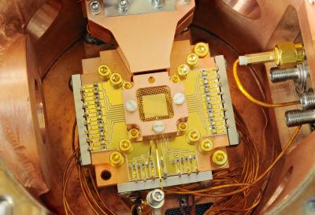

Low Temperature Physics for Quantum Computing
Skills Demonstrated
While working as a researcher at Sandia National Laboratories under the direction of Dr. Wei Pan, I designed, constructed, and characterized a biaxial sample rotation stage for use in cryogenic systems for orientation-dependent studies of anisotropic electronic transport phenomena at low temperatures and high magnetic fields.
Motivation
Quantum computing relies upon the fractional quantum Hall effect (FQHE), a phenomenon of 2D electron planes in which energy levels plateau at some precise fractional values of energy states. Just like in a simple, educational experiment involving the ordinary Hall effect you may remember from an introductory physics class, the FQHE is often investigated by tilting an electrical conductor in a magnetic field. Unlike the ordinary Hall effect, the FQHE is very faint, and can only be observed in thin semiconductor materials. The use of semiconductor materials illuminates another exciting possibility.
Unlike metals, semiconductors are often anisotropic, meaning that measuring a physical property along one dimension of a material can have a completely different result if measured along a different dimension. However, researchers of FQHE had no way to perform an experiment to confirm whether or not this important phenomenon could be an anisotropic property of the semiconductors which they studied. To quote one of the seminal works in the field:
Previous tilt experiments in the regime of the FQHE always assumed that only the angle of the magnetic field with respect to the sample normal mattered to the transport behavior, whereas the azimuth of the field, i.e., the direction of the so-created in-plane magnetic field…was immaterial. This assumption obviously needs to be scrutinized and justified.
fromStrongly Anisotropic Electronic Transport at Landau Level Filling Factor ν = 9/2 and ν = 5/2 under a Tilted Magnetic Fieldby Pan, et al.
So I set out to design a device which could perform such an experiment.
Design
According to literature, such a device must be able to tolerate high magnetic fields on the order of 30 teslas (one million times greater than that of the Earth's magnetic field), have a small enough power dissipation to be able to function at temperatures around 0.01°K (extremely close to absolute zero), and be able to rotate a sample in increments of 0.01° (how far the hour hand on a clock moves in one second), all within a cooling tank space approximately the size of a shot glass and filled with liquid helium.
| Parameter | State-of-the-Art | My Design |
|---|---|---|
| Axes of Rotation | 1 | 2 |
| Max Magnetic Field | 33 T | 33+ T* |
| Power Dissipation | 100 µW | 0 µW** |
| Min Operating Temp. | 0.05° mK | 0.01° mK |
| Resolution | 0.01° | 0.01° |
My design was similar to that of a puppet. High precision linear actuators outside the tank raised and lowered strings which, in turn, rotated the sample. The design was entirely machined out of stainless steel and brass so as to withstand high magnetic fields and avoid superconductivity at low temperatures. Because the strings were the only coupling between the sample stage and the rest of the device, the sample stage was effectively thermally isolated from the heat being generated outside the tank, allowing the device to work at extremely low temperatures. Finally, just like raising one arm on a puppet does not affect the other arm or legs, dual linear actuators could adjust the sample orientation about both axes independently.
Results
The device worked. We were able to deploy a sample in a cryogenic tank and rotate it about both axes independently in extreme cold and high magnetic field. Our results were published in Review of Scientific Instruments, a journal of the American Institute of Physics. To learn more about the project, read our paper.